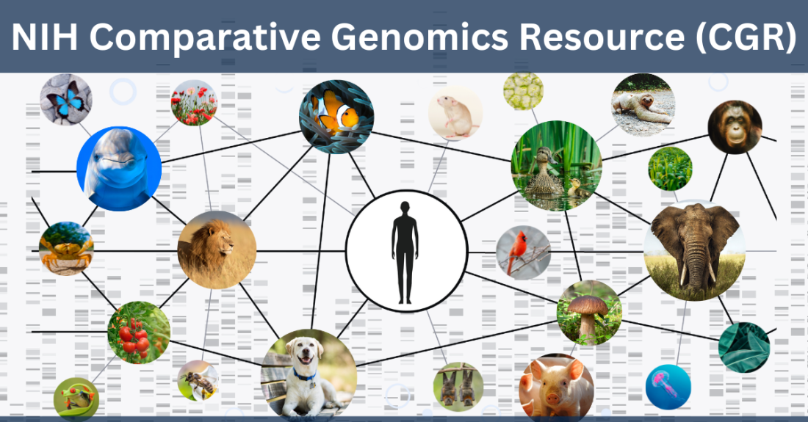
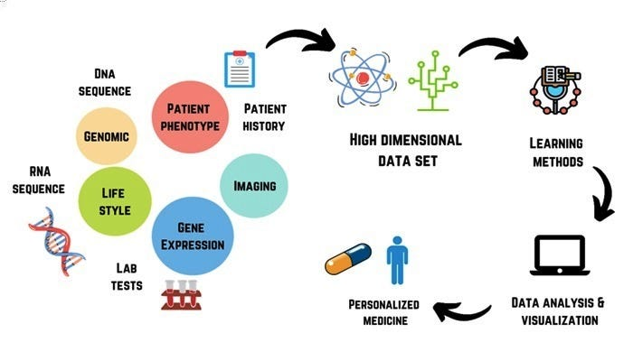

Supporting pioneering research at the intersection of computational analysis, genomic discovery, and life science innovation to help shape the next era of biology.
Computational DiscoveryAdvancing tools and workflows that transform large-scale biological data into interpretable scientific insight.
Genomic InnovationEncouraging research that improves annotation, interpretation, integration, and evolutionary understanding.
Applied ImpactPrioritizing work with relevance to biodiversity, agriculture, sustainability, and health.
Research Priorities
Driving genomics through computational insight and biological relevance
At Sivasakthi Science Foundation™, our funding priorities in bioinformatics are designed to support rigorous, future-facing research that bridges computational science with biological discovery.
We are committed to advancing research in the cutting-edge field of bioinformatics, with a particular emphasis on genomics. Under the Emerging Sciences category, we support pioneering research that can deepen our understanding of genomes and help propel the life sciences into a new era of data-driven discovery.
Our priorities are aligned with projects that connect computational analysis to meaningful biological interpretation. We seek to fund innovative work that addresses key scientific and technical challenges in the rapidly evolving landscape of genomics, from foundational data analysis to advanced predictive modeling.
“The future of genomics depends not only on data generation, but on how intelligently we interpret biological complexity.”
Research Direction
We are especially interested in research that strengthens the interface between algorithmic thinking and biological understanding. This includes studies that make genomic data more usable, more interpretable, and more actionable across research, biodiversity, sustainability, and applied life science contexts.
Focus Areas
Key areas of bioinformatics and genomics interest
These focus areas reflect the foundation’s interest in research themes that can expand biological understanding while enabling robust computational innovation.
Comparative Genomics
Comparative genomics offers profound insights into evolutionary relationships between species. We support studies that compare genomes to uncover genetic variation linked to diversity, adaptation, and evolution, with particular interest in plant and animal species native to India.

Functional Genomics
We encourage research that uses high-throughput approaches to investigate gene expression, gene function, and regulatory networks. Special emphasis is placed on studies exploring gene–environment interactions with implications for agriculture and ecosystem management.
Genomic Data Integration
We fund projects that address one of the field’s central challenges: integrating sequence, transcriptomic, epigenomic, and related datasets into coherent biological interpretation. Tool development and novel integration methodologies are especially encouraged.

AI-Driven Genomic Research
Artificial intelligence and machine learning are reshaping bioinformatics. We support research that uses AI for predictive modeling of gene expression, genome annotation, and the identification of genomic signatures associated with complex traits, plasticity, and evolution.
Population Genomics
Understanding genetic diversity within and between populations is critical for evolutionary biology and adaptation studies. We are interested in population genomics projects relevant to conservation, climate adaptation, and agricultural improvement in India.
Regulatory Genomics
Non-coding RNAs, enhancers, and other regulatory elements play essential roles in development and disease. We support research that investigates regulatory networks, non-coding genomic function, and their influence on gene expression and organismal biology.
Structural Variants & Stability
Structural variations such as inversions, translocations, and copy number changes can significantly affect phenotype and genomic integrity. We encourage work that explores their roles in breeding, disease resistance, and genome stability, alongside improved detection pipelines.
Why It Matters
Why bioinformatics and genomics remain central to future science
The scale and complexity of biological data continue to grow. Supporting bioinformatics means enabling the computational frameworks needed to transform this data into biological understanding and real-world progress.
Why Bioinformatics and Genomics?
By investing in bioinformatics, we aim to enable breakthroughs in computational methods that can analyze, integrate, and interpret massive genomic datasets. We envision a future where bioinformatics-driven discoveries contribute to more sustainable agriculture, improved environmental stewardship, and stronger foundations for advances in health and life science research.
Our Commitment to Science Innovation
We are committed to fostering innovation in bioinformatics and genomics research by supporting emerging scientists, institutions, and collaborative projects that push beyond current boundaries. Through these investments, we hope to catalyze discoveries that address pressing global challenges and strengthen genomics-based scientific solutions.
Advance the next frontier of genomic discovery with us
For more information on funding priorities, emerging research directions, or collaboration opportunities in bioinformatics and genomics, connect with our team and explore how your work can align with our scientific vision.